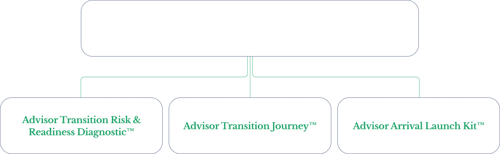

Stay
Staying Can Be the Right Call — If It's a Deliberate One.
Most advisors who reach out are not "ready to move." Many are testing whether their current seat can still work — if economics, team, technology, and succession are renegotiated with clear eyes.
Why This Applies to Staying, Too
Advisor Transition Architecture™ isn't only for advisors leaving; it's the same diagnostic discipline applied to strengthening what you already have.
Discovery – Risk and Readiness™
Six Questions to Ask About Your Current Firm
Applying the same six load-bearing domains from the Advisor Transition Risk & Readiness Diagnostic™ — this time, to staying well.
Client Portability & Relationship Risk
Is your book still portable and protected here? Which relationships are secure, and which depend more on the firm than on you?
Team Continuity & Alignment
Is your team truly aligned or just quiet? Who is genuinely committed to this seat versus verbally supportive of it?
Technology & Workflow Integrity
Is your tech stack keeping pace? Where is the platform quietly falling behind what your practice actually needs?
Economic Reality vs. Deal Optics
Are your economics still competitive five years out? Cash vs. conditional, payout sustainability, true earnings vs. headlines.
Equity, Ownership & Succession Architecture
Is your equity/succession path real? Who controls valuation, and what does liquidity actually look like from here?
Personal Timing & Readiness
Are you personally still energized by this seat? Energy, ambition, risk tolerance, and identity — renegotiated with clear eyes.

A way to surface hidden risk before it becomes irreversible — even when the decision is to stay.
If your seat is renegotiated with the same clear eyes you'd bring to a move, staying can be just as deliberate a decision as leaving.
Not sure if staying is still right?
A confidential conversation costs you nothing — and may change how you see everything.